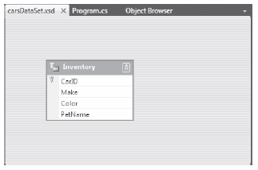
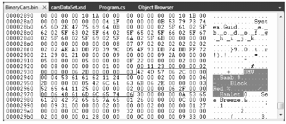

The DataTable type defines many members, many of which are identical in name and functionality to those of the DataSet. Table 22-7 describes some core members of the DataTable type beyond Rows and Columns.
Table 22-7. Key Members of the DataTable Type
| Member | Meaning in Life |
|---|---|
| CaseSensitive | Indicates whether string comparisons within the table are case sensitive. The default value is false. |
| ChildRelations | Returns the collection of child relations for this DataTable (if any). |
| Constraints | Gets the collection of constraints maintained by the table. |
| Copy() | A method that copies the schema and data of a given DataTable into a new instance. |
| DataSet | Gets the DataSet that contains this table (if any). |
| DefaultView | Gets a customized view of the table that might include a filtered view or a cursor position. |
| ParentRelations | Gets the collection of parent relations for this DataTable. |
| PrimaryKey | Gets or sets an array of columns that function as primary keys for the data table. |
| RemotingFormat | Allows you to define how the DataSet should serialize its content (binary or XML) for the .NET remoting layer. |
| TableName | Gets or sets the name of the table. This same property might also be specified as a constructor parameter. |
To continue with the current example, you can set the PrimaryKey property of the DataTable to the carIDColumn DataColumn object. Be aware that the PrimaryKey property is assigned a collection of DataColumn objects to account for a multicolumned key. In this case, however, you need to specify only the CarID column (being the first ordinal position in the table):
static void FillDataSet(DataSet ds) { ... // Mark the primary key of this table. inventoryTable.PrimaryKey = new DataColumn[] { inventoryTable.Columns[0] }; }
At this point, your DataTable object is complete. The final step is to insert the DataTable into the carsInventoryDS DataSet object using the Tables collection:
static void FillDataSet(DataSet ds) { ... // Finally, add our table to the DataSet. ds.Tables.Add(inventoryTable); }
Now update your Main() method to call FillDataSet(), passing in your local DataSet object as an argument. Next, pass the same object into a new (yet to be written) helper method named PrintDataSet():
static void Main(string[] args) { Console.WriteLine("***** Fun with DataSets *****\n"); ... FillDataSet(carsInventoryDS); PrintDataSet(carsInventoryDS); Console.ReadLine(); }
The PrintDataSet() method simply iterates over the DataSet metadata (using the ExtendedProperties collection) and each DataTable in the DataSet, printing out the column names and row values using the type indexers:
static void PrintDataSet(DataSet ds) { // Print out the DataSet name and any extended properties. Console.WriteLine("DataSet is named: {0}", ds.DataSetName); foreach (System.Collections.DictionaryEntry de in ds.ExtendedProperties) { Console.WriteLine("Key = {0}, Value = {1}", de.Key, de.Value); } Console.WriteLine(); // Print out each table. foreach (DataTable dt in ds.Tables) { Console.WriteLine("=> {0} Table:", dt.TableName); // Print out the column names. for (int curCol = 0; curCol < dt.Columns.Count; curCol++) { Console.Write(dt.Columns[curCol].ColumnName + "\t"); } Console.WriteLine("\n----------------------------------"); // Print the DataTable. for (int curRow = 0; curRow < dt.Rows.Count; curRow++) { for (int curCol = 0; curCol < dt.Columns.Count; curCol++) { Console.Write(dt.Rows[curRow][curCol].ToString() + "\t"); } Console.WriteLine(); } } }
If you run your program now, you’ll see the following output (your time stamp and GUID value will differ of course):
***** Fun with DataSets ***** DataSet is named: Car Inventory Key = TimeStamp, Value = 1/22/2010 6:41:09 AM Key = DataSetID, Value = 11c533ed-d1aa-4c82-96d4-b0f88893ab21 Key = Company, Value = Mikko's Hot Tub Super Store => Inventory Table: CarID Make Color PetName ---------------------------------- 0 BMW Black Hamlet 1 Saab Red Sea Breeze
Given your work in the previous chapter, you should notice that the manner in which you process data using the connected layer (e.g., data reader objects) and the disconnected layer (e.g., DataSet objects) is quite different. Working with a data reader typically involves establishing a while loop, calling the Read() method, and using an indexer to pluck out the name/value pairs. On the other hand, DataSet processing typically involves a series of iteration constructs to drill into the data within the tables, rows, and columns (remember that DataReader requires an open database connection so that it can read the data from the actual database).
DataTables support a method named CreateDataReader(). This method allows you to obtain the data within a DataTable using a data reader–like navigation scheme (the data reader will now read data from the in-memory DataTable, not from the actual database, so there’s no database connection involved here). The major benefit of this approach is that you now use a single model to process data, regardless of which layer of ADO.NET you use to obtain it. Assume you have authored a new method in your Program class named PrintTable():
static void PrintTable(DataTable dt) { // Get the DataTableReader type. DataTableReader dtReader = dt.CreateDataReader(); // The DataTableReader works just like the DataReader. while (dtReader.Read()) { for (int i = 0; i < dtReader.FieldCount; i++) { Console.Write("{0}\t", dtReader.GetValue(i).ToString().Trim()); } Console.WriteLine(); } dtReader.Close(); }
Notice that the DataTableReader works identically to the data reader object of your data provider. A DataTableReader can be an ideal choice when you wish to pump out the data within a DataTable quickly, without needing to traverse the internal row and column collections. Now assume you have updated the previous PrintDataSet() method to invoke PrintTable(), rather than drilling into the Rows and Columns collections:
static void PrintDataSet(DataSet ds) { // Print out the DataSet name, plus any extended properties. Console.WriteLine("DataSet is named: {0}", ds.DataSetName); foreach (System.Collections.DictionaryEntry de in ds.ExtendedProperties) { Console.WriteLine("Key = {0}, Value = {1}", de.Key, de.Value); } Console.WriteLine(); foreach (DataTable dt in ds.Tables) { Console.WriteLine("=> {0} Table:", dt.TableName); // Print out the column names. for (int curCol = 0; curCol < dt.Columns.Count; curCol++) { Console.Write(dt.Columns[curCol].ColumnName.Trim() + "\t"); } Console.WriteLine("\n----------------------------------"); // Call our new helper method. PrintTable(dt); } }
When you run the application, the output is identical to that shown previously. The only difference is how you access the DataTable’s contents internally.
DataSets and DataTables both support the WriteXml() and ReadXml() methods. WriteXml() allows you to persist an object’s content to a local file (as well as into any System.IO.Stream-derived type) as an XML document. ReadXml() allows you to hydrate the state of a DataSet (or DataTable) from a given XML document. In addition, DataSets and DataTables both support WriteXmlSchema() and ReadXmlSchema() for saving or loading an *.xsd file.
To test this out for yourself, update your Main() method to call the following helper function (notice that you pass a DataSet as the sole parameter):
static void SaveAndLoadAsXml(DataSet carsInventoryDS) { // Save this DataSet as XML. carsInventoryDS.WriteXml("carsDataSet.xml"); carsInventoryDS.WriteXmlSchema("carsDataSet.xsd"); // Clear out DataSet. carsInventoryDS.Clear(); // Load DataSet from XML file. carsInventoryDS.ReadXml("carsDataSet.xml"); }
If you open the carsDataSet.xml file (which you will find under the \bin\Debug folder of your project), you will find that each column in the table has been encoded as an XML element:
<?xml version="1.0" standalone="yes"?> <Car_x0020_Inventory> <Inventory> <CarID>0</CarID> <Make>BMW</Make> <Color>Black</Color> <PetName>Hamlet</PetName> </Inventory> <Inventory> <CarID>1</CarID> <Make>Saab</Make> <Color>Red</Color> <PetName>Sea Breeze</PetName> </Inventory> </Car_x0020_Inventory>
If you were to double click on the generated *.xsd file (also found under your \bin\Debug folder) within Visual Studio, you will open the IDE’s XML schema editor (Figure 22-3).
Figure 22-3 The XSD editor of Visual Studio 2010
Note Chapter 24 will introduce you to the LINQ to XML API, which is the preferred manner for manipulating XML data in the .NET platform.
It is also possible to persist the contents of a DataSet (or an individual DataTable) as a compact binary format. This can be especially helpful when a DataSet object needs to be passed across a machine boundary (in the case of a distributed application); one drawback of XML data representation is that its descriptive nature can result in a good deal of overhead.
To persist DataTables or DataSets in a binary format, set the RemotingFormat property to SerializationFormat.Binary. At this point, you can use the BinaryFormatter type (see Chapter 20) as expected. Consider the following final method of the SimpleDataSet project (don’t forget to import the System.IO and System.Runtime.Serialization.Formatters.Binary namespaces):
static void SaveAndLoadAsBinary(DataSet carsInventoryDS) { // Set binary serialization flag. carsInventoryDS.RemotingFormat = SerializationFormat.Binary; // Save this DataSet as binary. FileStream fs = new FileStream("BinaryCars.bin", FileMode.Create); BinaryFormatter bFormat = new BinaryFormatter(); bFormat.Serialize(fs, carsInventoryDS); fs.Close(); // Clear out DataSet. carsInventoryDS.Clear(); // Load DataSet from binary file. fs = new FileStream("BinaryCars.bin", FileMode.Open); DataSet data = (DataSet)bFormat.Deserialize(fs); }
If you call this method from Main(), you can find the *.bin file in your bin\Debug folder. Figure 22-4 shows the contents of the BinaryCars.bin file.
Figure 22-4 A DataSet saved to a binary format
Source Code You can find the SimpleDataSet application under the Chapter 22 subdirectory.